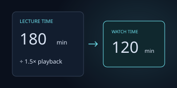
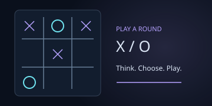
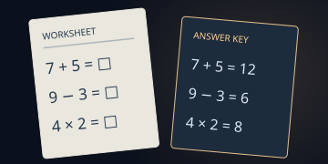
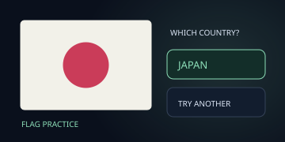
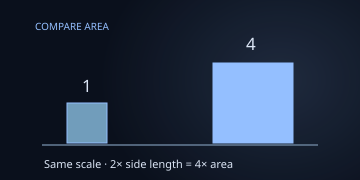
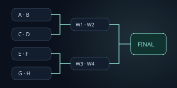
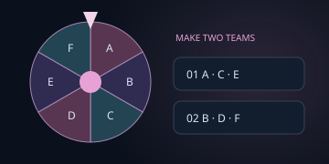
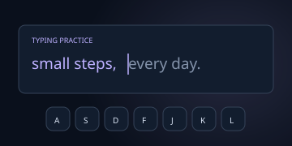
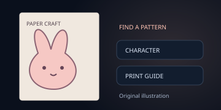

Everyday Tools
계산·단위 변환부터 사진과 PDF 작업까지. 필요한 도구를 검색해서 바로 사용합니다.
DENNY LIM 직접 만들고 운영하는 웹 서비스
계산과 변환부터 대진표, 학습과 만들기까지. 필요한 순간에 바로 쓸 수 있는 서비스를 설계하고 운영합니다.
TOOLS · PLAY · LEARNING
작은 예시로 기능을 살펴보고, 바로 사용하거나 가이드부터 읽어보세요.
미리보기는 기능을 설명하기 위해 만든 예시 이미지입니다.
서비스 9개를 소개합니다.

계산·단위 변환부터 사진과 PDF 작업까지. 필요한 도구를 검색해서 바로 사용합니다.

보드·퍼즐·아케이드를 브라우저에서 즐깁니다. 게임별 규칙과 조작법을 함께 확인하세요.

수학 문제, 빙고, 미로와 단어 찾기를 만들고 문제지·정답지로 나눠 인쇄합니다.

매일 국기 5개로 나라 이름을 익힙니다. 일일 도전과 지역별 연습을 골라 풀어보세요.

나라, 행성, 높이를 비례 도형으로 비교합니다. 수치·단위·출처를 확인하고 SVG로 저장하세요.

참가자를 넣어 토너먼트나 풀리그를 만듭니다. 점수를 기록하고 현재 상태를 인쇄·공유하세요.

이름을 추첨하거나 참가자를 팀으로 나눕니다. 공유 링크에는 입력 목록이 포함됩니다.

여러 언어의 문장으로 타자를 연습합니다. 속도·정확도와 자주 틀리는 글자를 확인하세요.

종이 스퀴시 도안을 찾아 인쇄를 준비합니다. 사용하기 전 원작자 페이지의 이용 조건을 확인하세요.
EXPLAINERS · EXAMPLES · LIMITS
실제 기능을 바탕으로 계산 예시, 설정 방법, 저장 방식과 한계를 정리한 아홉 개의 사용 가이드입니다.
8명이 참가하면 토너먼트는 7경기, 풀리그는 28경기입니다. 한 번의 패배로 탈락하는 방식과 모두가 서로 겨루는 방식의 차이를 비교합니다.
대회 방식과 경기 수 계산하기문제지를 먼저 출력하고, 정답 표시를 켜 교사용 정답지를 만드는 순서를 설명합니다.
활동지 만들기 순서일일 기록 기준이 UTC인 이유, 연습 라운드와 기록을 구분하는 방법을 안내합니다.
퀴즈와 기록 알아보기면적, 지름, 높이의 그림이 무엇을 비교하는지와 출처 수치를 확인하는 법을 설명합니다.
비교 그림을 정확히 읽기재생 시간, 배속, 복습 여유 시간과 공부 가능한 날짜를 넣어 하루 분량이 현실적인지 계산합니다.
학습 시간 계산하기입력한 줄이 당첨 확률에 미치는 영향, 팀 인원 배분과 공유 링크의 개인정보 범위를 설명합니다.
추첨 기준 확인하기WPM과 정확도 계산 예시를 보고 언어와 문장이 다른 기록을 공정하게 비교하는 방법을 알아봅니다.
기록 해석하기키보드·터치·게임패드 조작이 작동하지 않을 때 확인할 순서와 기기별 검증의 한계를 안내합니다.
조작 점검하기인쇄 유형과 이용 조건을 구별하고, 원작자 페이지 확인부터 종이 출력까지 차례로 준비합니다.
도안 인쇄 준비하기A SEPARATE TABLE TENNIS SERVICE
부수와 공개 경기 기록을 살펴보고, 지도와 캘린더에서 대회 일정을 찾고, 탁구 생활 안내에서 참가 준비와 장비 정보를 확인해 보세요.
MODU TT 둘러보기modutt.kr · iamdenny.com의 도구 서비스와 별도로 운영합니다
FROM SMALL FRICTION TO USEFUL TOOLS
반복되는 계산, 모임에서의 선택, 인쇄하기 어려운 활동지처럼 작지만 자주 만나는 불편을 찾습니다. 브라우저에서 바로 써 볼 수 있는 작은 서비스로 만들고, 사용 방법과 제한도 함께 설명합니다.
무엇을 하려다 멈추는지, 어떤 계산이나 준비가 반복되는지 관찰합니다.
대진표, 퀴즈, 변환기처럼 목적이 분명한 기능부터 설계합니다.
결과를 읽는 법과 주의할 점을 안내하고, 의견을 받아 고칩니다.
CHOOSE WHAT YOU NEED
가운데의 설명을 읽고 맞는 서비스로 이동하세요. 각 버튼은 실제 기능과 연결되어 있습니다.
CLEAR BY DEFAULT
서비스를 사용할 때 자주 헷갈리는 기준과 저장 방식을 공개합니다.
아니요. 일일 도전은 UTC 0시에 바뀝니다. 한국 시간으로는 오전 9시에 새 문제가 시작되며, 지역별 연습은 오늘의 기록에 영향을 주지 않습니다.
문제와 정답을 숨긴 상태로 활동지를 인쇄한 뒤, 정답 표시를 켜서 다시 인쇄하면 교사용 정답지를 만들 수 있습니다. 같은 판 번호는 같은 문제를 만들고 번호를 바꾸면 다른 활동지가 나옵니다.
참가자가 n명일 때 토너먼트는 우승자를 정하기까지 n−1경기, 한 번씩 모두 만나는 풀리그는 n(n−1)/2경기가 필요합니다. 예를 들어 8명은 각각 7경기와 28경기입니다.
공유 링크에는 공유 시점의 입력 목록이 포함될 수 있습니다. 개인 정보나 공개하고 싶지 않은 이름은 넣거나 공유하지 마세요. 저장한 명단은 현재 기기의 브라우저에 남습니다.
아니요. 나라 면적은 비례 정사각형으로, 행성은 지름 비교용 원으로 표시합니다. 막대는 선택한 한 가지 수치를 비교합니다. 각 항목의 단위와 출처를 함께 확인해 주세요.
아니요. Google Analytics는 선택 사항이며 허용하기 전에는 불러오지 않습니다. 현재 선택은 아래쪽의 분석 설정에서 언제든 바꿀 수 있습니다. 홈페이지의 Cloudflare 성능 통계는 별도로 운영하며 자세한 내용은 개인정보 안내에 적었습니다.
THE MAKER / DENNY LIM
안녕하세요, Denny Lim입니다. iamdenny.com의 사용 가이드와 연결된 도구·학습·놀이·인쇄 서비스를 직접 기획하고 운영합니다. 설명은 현재 기능과 계산 예시를 대조해 갱신하고, 기능이 바뀌거나 오류 제보가 확인되면 관련 안내도 함께 고칩니다.